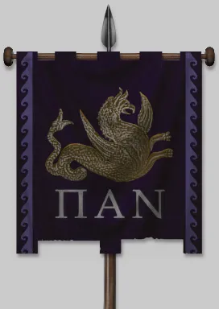
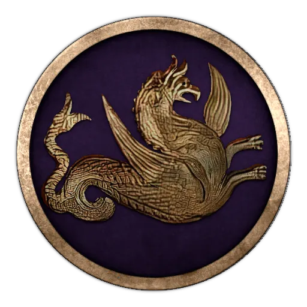
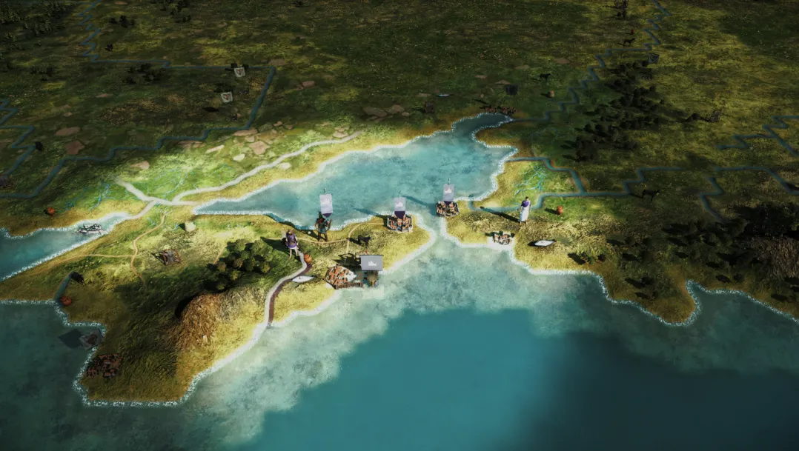
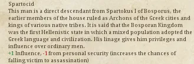

RTR: Imperium Surrectum
RTR: Imperium SurrectumThe Bosporan Kingdom
2021-12-03 · Maurits
"And are not we too sailing to the same places as they, with grain among all our other provisions? What wrong are they doing us in carrying food thither?" – Herodotos (VII. 147)
My forefathers hugged the outer shores of Asia, proud Milesians all. Where none dared cross the cursed waters of Pontus Euxeinos, we followed the trail of Heracles and call this sea our own! The great city of Pantikapaion was founded on the ruins left behind by the ancient Cimmerians, after whom it is reputed the narrow passage leading to Lake Maiotis was called Kimmerios Bosporos. Hah, we even use their old ditch to our own advantage, a useful means to keep out the filthy barbarians that roam these lands on the very fringe of civilization! We can justly regard our realm as the pearl of the Black Sea. Even the despot Xerxes – accursed be his name – beheld our mighty fleet with envy; his mouth watering for the endless stream of golden grain flowing towards the Aegean and beyond. Athens might be proud, but where would she be without us, the great Bosporans? We held her fate in our hands, fed her for ages in exchange for her silver and gold! If only these effeminate fools, the degenerate Ptolemies, could be kept away from our markets, our wealth…
I am Παιρισάδης or Pairisades, the second of that name, son of the great Satyros from the House of Spartokos, or Leukonids. Some might call us tyrants, most know better. Rivalling the great Lysimachos in enlightened wisdom, valour and opulence, we straddle the gap between Greek and barbarian, Sindian and Hellene! An iron youth fit for the gods was my faith, being forced to flee from the wretched hands of my uncle Eumelos who killed almost our entire family after being victorious in the great war against his own siblings, Prytanis and my beloved father Satyros. The fool almost destroyed our blessed kingdom! I, riding out of the city on horseback, took refuge with the noble Agarus, king of the Scythians.
Soon, – Pan be praised – after having been king for no more than five years and an equal number of months, my wretched uncle died, suffering a very strange mishap. The prophets had already foretold his death in a house that was on the move. As my uncle was returning home from Sindicê and was hurrying for a sacrifice, riding to his palace in a four-horse carriage which had four wheels and a canopy, it happened that the horses were frightened and ran away with him. Since the driver was unable to manage the reins, my wretched uncle, fearing lest he be carried to the ravines, tried to jump out; but his sword caught in the wheel, and he was dragged along by the motion of the carriage and died on the spot [Diodorus Siculus XX 25-26]. Thus ended the reign of Eumelos, and henceforth his son Spartokos, my dear cousin, ruled in his stead.
My cousin was ever more dear to me for him being barren of a son that he could call his own. The gods must have looked upon our great Bosporan Kingdom in favour – who else than me, raised among the fierce barbarians of the steppes, proud bearer of the blood of Heracles and Odysseus from the ancient shores of Miletus, could be more fit to lead our proud people to new glory? For fourteen years I have reigned, slaughtering the filthy pirates who ravaged our trade. So far, I have only scratched the very surface of ambition, itching to carry the war to our neighbours, enemy and friend alike, glorious spoils and fat lands for the taking! I am Pairisades. All will tremble and feel my righteous wrath!"

Welcome! Today is as you all have noticed a very special day! Many of the creators of RIS have been modding Rome since its original release. Ever since then we and other moders have been pushing the limits of the engine. With creativity, we surpassed many hardcoded limits but there was always one we couldn't surpass, but that stops today.
Feral has been hard at work removing the hardcoded faction limit and today we all see the fruit of that.
So it's with delight that I can present to you all our 22nd faction: The Bosporan Kingdom!

The Bosporan Kingdom was a Greco-Scythian state first settled by Greek colonists as far back as in the 7th century BC. It's often regarded as the first Hellenistic state with the native population and Greek settlers intermixing causing the natives to adopt Greek customs and language. The Kingdom exported vast amounts of wheat, fish, and slaves and became an important trade power in the Black Sea, bringing in considerable wealth.
As the Bosporans you start quite small with just two cities and plenty of enemies at your gates. Not only do you find plenty of free peoples' cities around you but also the Siraces and their terrifying armies filled with horse archers and worse! Across the sea, you find nations that would love to snatch your wealth. States like Pontus and Pergamon and on the west coast the Odryssians are a power to look for. Who knows when they will put in a move towards your cities!

As the campaign description above already highlights, the Bosporan Kingdom was ruled by the Spartocid dynasty. We have created a special trait for that bloodline:

That's all for now, we look forward to your feedback and stories when trying out these wonderful new factions, before long the waiting will finally be over!